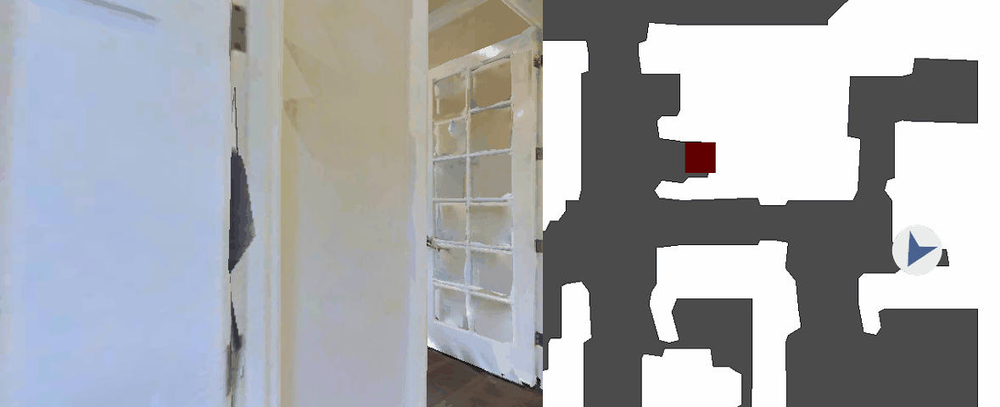
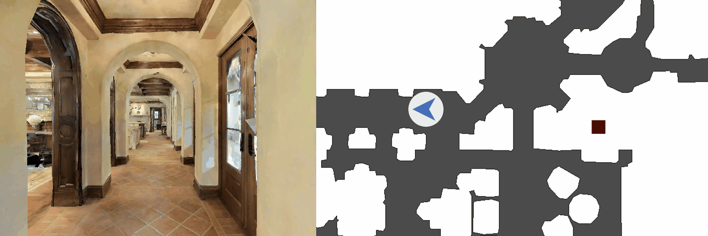
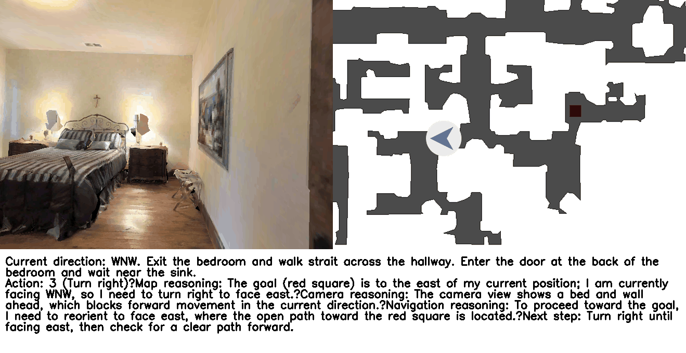
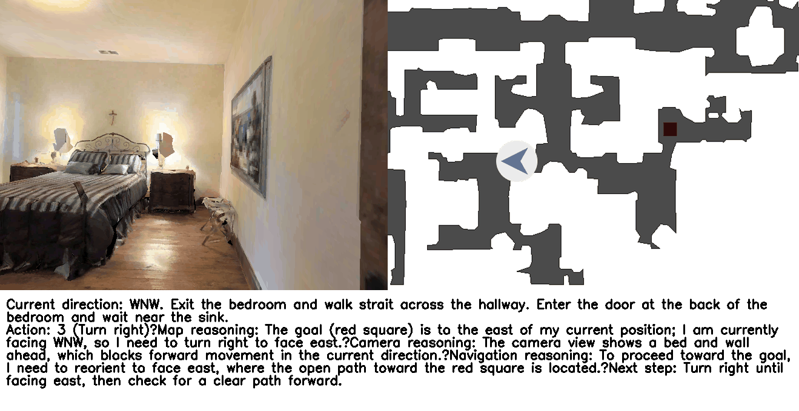
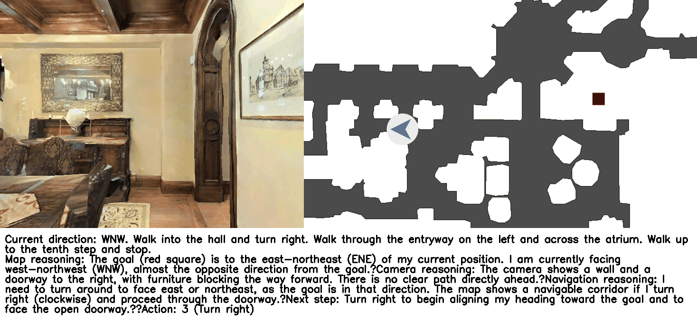
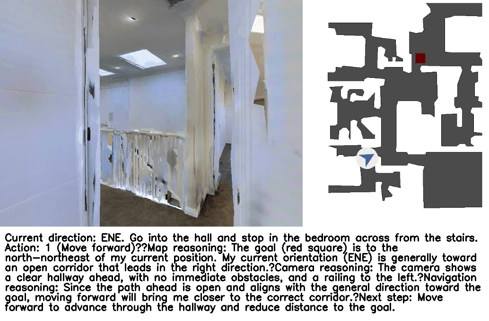
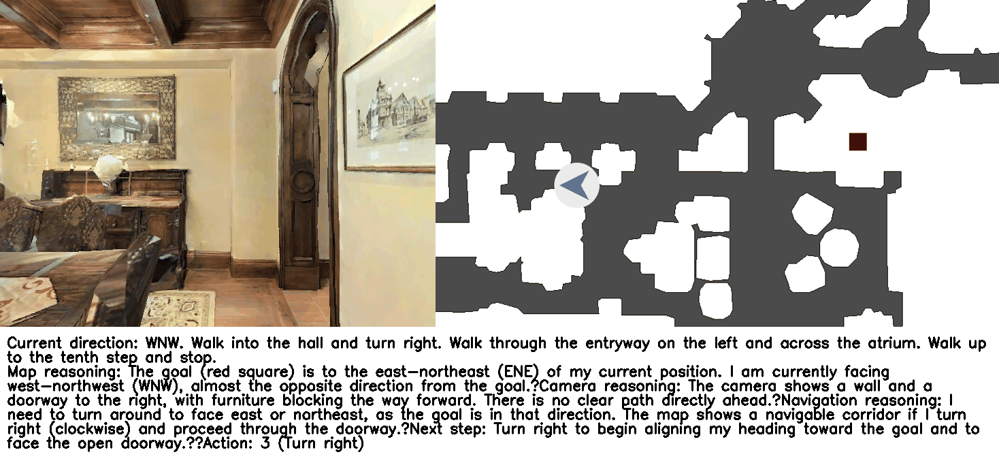
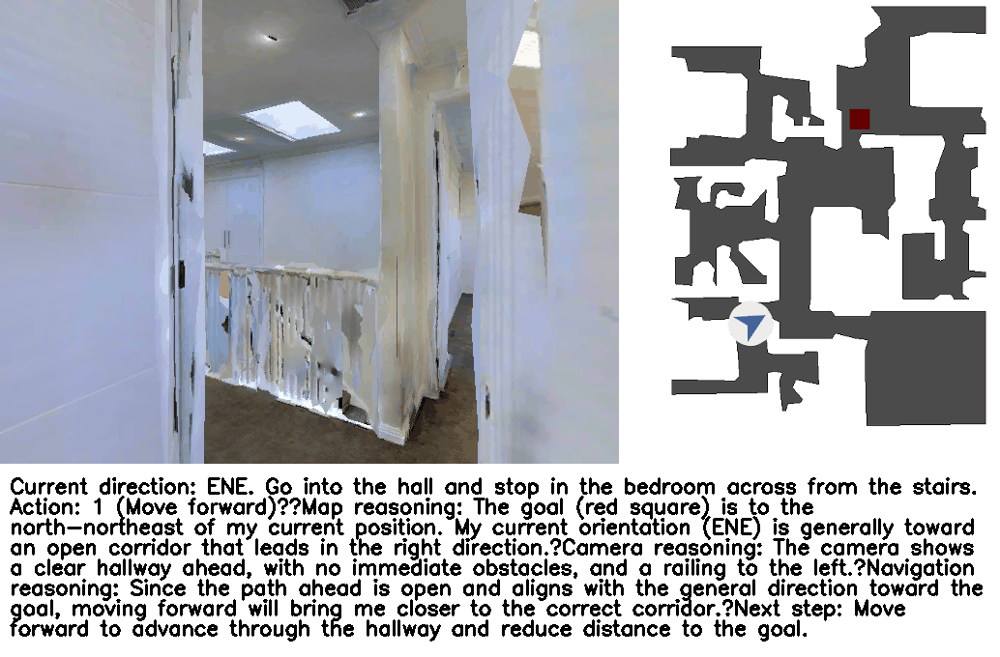
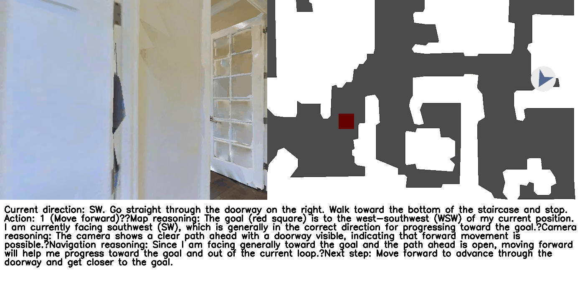
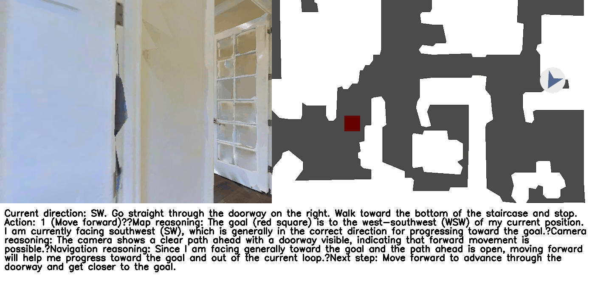

VLN-Zero on GPT-4.1 vs GPT-5
GPT-4.1
GPT-5
GPT-4.1
GPT-5

Rapid adaptation in unseen environments is essential for scalable real-world autonomy, yet existing approaches rely on exhaustive exploration or rigid navigation policies that fail to generalize. We present VLN-Zero, a two-phase vision-language navigation framework that leverages vision-language models to efficiently construct symbolic scene graphs and enable zero-shot neurosymbolic navigation.
In the exploration phase, structured prompts guide VLM-based search toward informative and diverse trajectories, yielding compact scene graph representations. In the deployment phase, a neurosymbolic planner reasons over the scene graph and environmental observations to generate executable plans, while a cache-enabled execution module accelerates adaptation by reusing previously computed task–location trajectories.
By combining rapid exploration, symbolic reasoning, and cache-enabled execution, the proposed framework overcomes the computational inefficiency and poor generalization of prior vision-language navigation methods, enabling robust and scalable decision-making in unseen environments. VLN-Zero achieves 2x higher success rate compared to state-of-the-art zero-shot models, outperforms most fine-tuned baselines, and reaches goal locations in half the time with 55% fewer VLM calls on average compared to state-of-the-art models across diverse environments.
Overview of VLN-Zero. The framework consists of two main phases: exploration and deployment. In the exploration phase (gray), the VLM guides a robot agent to interact with the environment under user-specified constraints, producing both a action at each step and ultimately yielding a scene graph (top-down map). In the deployment phase (blue), a planner leverages the generated scene graph, visual observations, and constraints to generate constraint-satisfying actions for a task prompt. During execution, a caching module further accelerates execution by reusing previously validated trajectories via compositional task decomposition.


 

 



 
